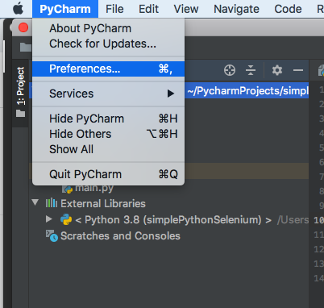

Project Interpreter Mapping:
Open Pycharm --> Go to Preferences -->Project --> Project Interpreter --> Now select the Python you have installed. Please check below screenshot where we have selected Python 3.2 from drop down and saved it.
Create a new project in Pycharm
1. Open Pycharm
2. Go To File --> New Project as below.

3. Type project name. We have given project name as 'DemoTestSel'

4. Click on Create
5. This will create a new project as below.

How To Install Selenium Package In Pycharm:
1. Open Pycharm
2. Go To Pycharm --> Preferences

3. Go to project Interpreter , as shown in below.
4. Click on + button to add Selenium Package
5. Search for Selenium , click on Install Package.
6. Once Selenium in Installed , it will display under installed package list as
below.